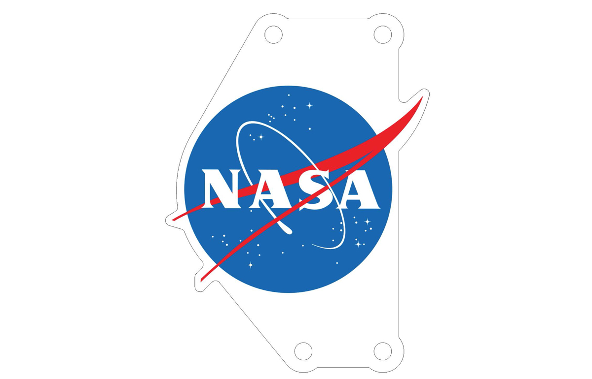
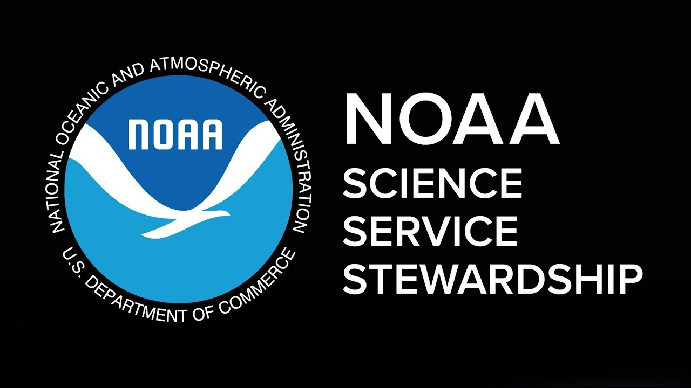

Awards
- National Science Foundation (NSF), "Research Experiences for Undergraduates in Satellite and Ground-Based Remote Sensing at NOAA-CESSRST: Enhanced Engagement", $590,500, PI (R. Blake), Co-PIs (H. Norouzi) (2022-2025)
- National Science Foundation (NSF), "Developing an Ecosystem of STEM Success for Built Environment Majors", $1,499,481, PI (M. Villatoro), Co-PIs (H. Norouzi, M, Nakamura, D. Kang, and M. Ummy) (2022-2028)
- National Science Foundation (NSF), " RAPID: Collecting critical data for advancing our understanding of wildfire impacts on soil characteristics and research on post-wildfire compound hazards", $49,997, PI (A. AghaKouchak, UCI), Co-PIs (T. Banerjee, H. Norouzi, F. Vahedifard) (2020-2021)
- National Science Foundation (NSF), " GP-EXTRA: Recruiting and Retaining Non-geoscience Minority STEM Majors for the Geoscience Workforce ", $496,786, PI (R. Blake), Co-PIs (J. Liou-Mark, H. Norouzi, V. Vladutescu)
- National Science Foundation (NSF), " GEOPAths-UP: Recruiting and Retaining Non-geoscience Minority STEM Majors for Geoscience Service Learning and for the Geoscience Workforce", $ 294,354, PI (R. Blake), Co-PIs (J. Liou-Mark, H. Norouzi, M. Nakamura) (2018-2020)
- Robin Hood Foundation, "Responding to Learning Loss: Post Pandemic Academic Recovery for In-Coming Freshmen at the New York City College of Technology (City Tech)", $600,000, PI (R. Blake), Co-PIs (H. Norouzi) (2021-2022)
- U.S. Agency for International Development (USAID), “An Integrated Modeling Approach for Sustainable Development for the Ichkeul Lake”, $79,540, PI (B. Bejaoui, Tunisia), US Collaborators (H. Norouzi, R. Blake) (2019-2021)
- National Aeronautics and Space Administration (NASA), "A Multi-Sensor Calibration Algorithm for Improving Emissivity Retrieval by Integrating Microwave Brightness Temperature Diurnal Cycle", $363,397, PI (H. Norouzi), Co-PI (M. Azarderakhsh) (2016-2019)
- U.S. Army Research Laboratory, ARO, “The Potential of Using Microwave Emission in Detecting Freeze and Thaw States“, $238,375, PI (H. Norouzi), Co-PI (R. Blake) (2015-2018)
- U.S. Army Research Office, ARO, “Developing an Approach to Map Air Surface Maxima and Minima Temperatures by Exploring Surface Energy Balance “, $49,785, PI (H. Norouzi), Co-PI (P. Ramamurphy) (2015-2016)
- Department of Defense (DoD), DURIP, U.S. Army Research Laboratory, ARO, “Instrumentation for Exploring Surface Energy Balance using a combination of Satellite and Ground-Based Observations “, $70,752, PI (H. Norouzi) (2015-2016)
- National Oceanic Atmospheric Administration, (NOAA), “NOAA-CREST Land Emissivity Products from Passive Microwave Observations “, $50,000. PI (M. Temimi), Co-PI (H. Norouzi) (2012-2014)

National Science Foundation (NSF)

Robin Hood Foundation
U.S. Agency for International Development (USAID)

National Aeronautics and Space Administration (NASA)

U.S. Army Research Laboratory

Department of Defense (DoD)
